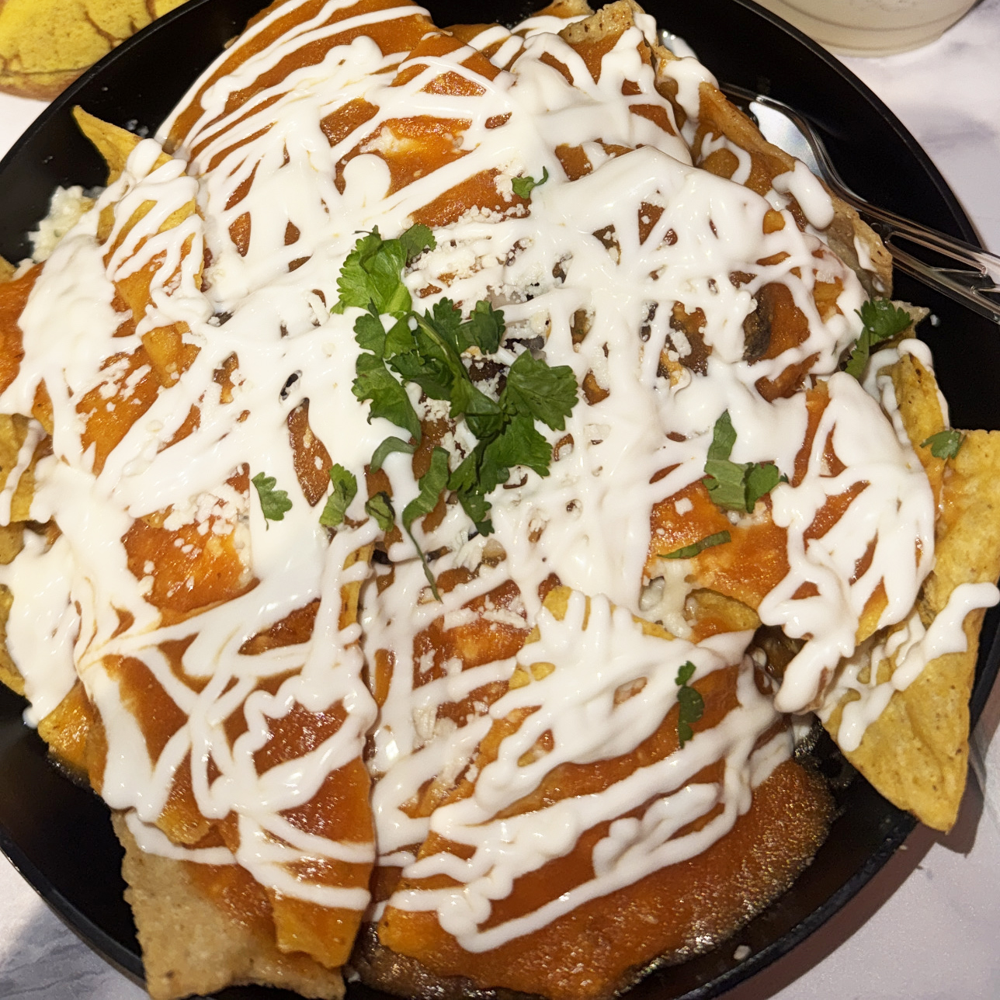

Home
Traditional Mexican Chinlaquiles

How to prepare homemade traditional red chilaquiles.
The recipe is made of crispy tortilla pieces simmered in chile tomatoe salsa, then topped with beans, cream, cheese, onion, and cilantro.
Ingredients
For the salsa roja
- 4 ripe Roma tomatoes
- 2 dried guajillo chiles, stemmed and seeded
- 1-2 dried árbol chiles, optional, for extra heat
- 1/4 white onion
- 1/2 cup water or chicken broth
- salt, for taste
For the chilaquiles
- 8 corn tortillas
- vegetable oil, for frying
- 1/2 cup Mexican crema or sour cream
- 1/2 cup crumbled queso fresco or queso añejo
- 1/4 white onion, thinly sliced
- Fresh cilantro, chopped
- 1 avocado, sliced, optional
- 2-4 fried eggs, optional
- Shredded cooked chicken, optional
Steps
- Make the salsa. Toast the guajillo and árbol chiles briefly in a dry skillet for about 10-15 seconds per side. Don't let them burn.
- Add the tomatoes and onion to the skillet and cook until lightly charred and softened.
- Soak the toasted chiles in hot water for about 10 minutes.
- Blend the tomatoes, onion, garlic, softened chiles, and 1/2 cup water or broth until smooth. Season generously with salt.
- Prepare the tortillas. Cut each tortilla into 6-8 wedges. Fry in 1/2-inch of hot oil until crisp and golden. Drain on paper towels and season lightly with salt.
- Cook the salsa. Pour the salsa into a large skillet and simmer for 5-7 minutes. Taste and adjust the salt.
- Combine. Add the fried tortilla chips to the simmering salsa and toss gently. Cook for only 1-2 minutes, you want them coated and softened slightly while retaining some crunch.
- Serve immediately. Transfer to plates and top with crema, queso fresco, sliced onion, and cilantro. Add avocado, chicken, or a fried egg if desired.